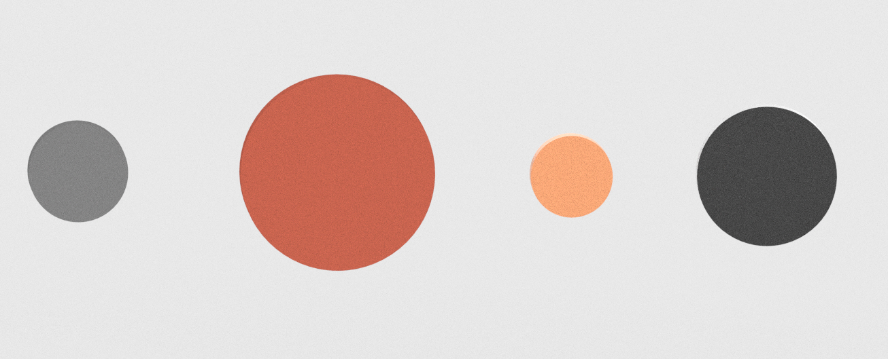
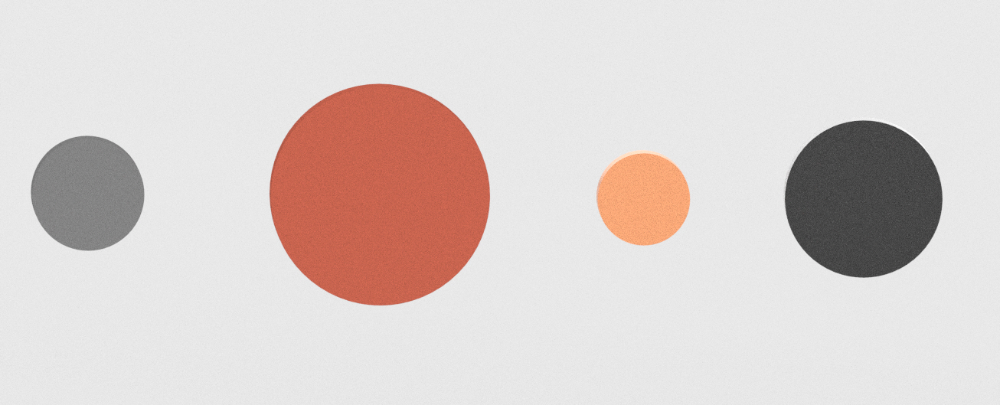
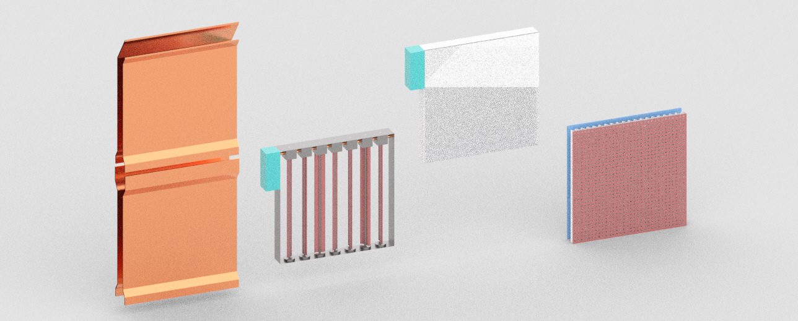

New Terminology
Origin: from Latin modulus ("a measured unit or building block") + Greek suffix -on ("an operative or active entity"). A modulon is a self-contained, functional building block designed to operate independently or as part of a larger system.

 

Initially conceived as an interlocking, brick-like unit stackable in layers and fabricated from functional materials such as clay, copper, or photovoltaic composites; later redefined as a panelized, plug-in building block designed to integrate into a structurally independent framework (e.g., space frames), enabling the formation of flat or curved architectural surfaces.
